最小功法・單元四：特殊結構應用
開場
這支影片是最小功法單元四：特殊結構應用。把同一套解題流程，延伸到考場上三種常見題型：純桁架、梁加吊桿的混合結構，以及對稱的門型剛架。
一、U 裡有什麼，就對什麼微分
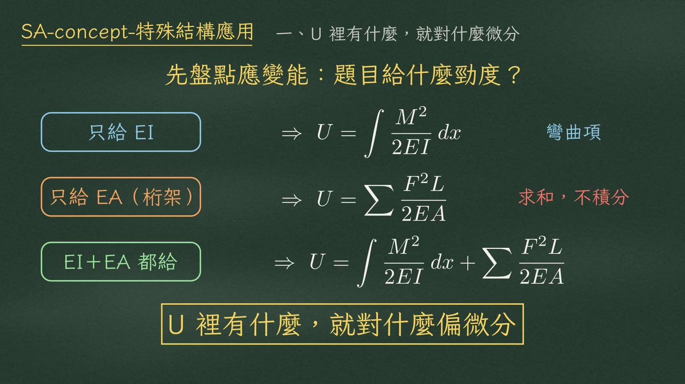
| 題目給的勁度 | U 的寫法 | 備註 |
|---|---|---|
| 只給 \(EI\) | \(U=\displaystyle\int\frac{M^2}{2EI}\,dx\) | 只留彎曲項，沿桿長積分 |
| 只給 \(EA\)（桁架） | \(U=\displaystyle\sum\frac{F^2L}{2EA}\) | 只留軸向項，逐桿求和，不是積分 |
| \(EI\)、\(EA\) 都給 | \(U=\displaystyle\int\frac{M^2}{2EI}\,dx+\sum\frac{F^2L}{2EA}\) | 兩項都寫進同一條 U |
二、例題④ 三桿對稱桁架
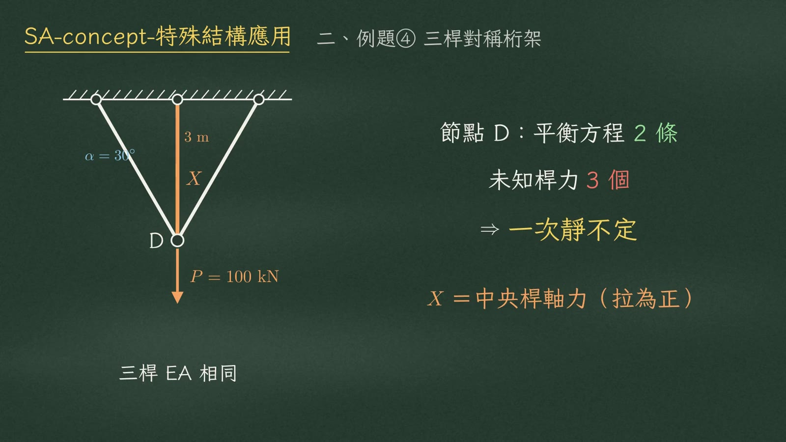
三根桿的 \(EA\) 相同，中央桿垂直、長 3 m，兩根斜桿和垂直線夾 30°，節點 D 受向下 100 kN。節點只有 2 條平衡方程，卻有 3 個未知桿力 → 一次靜不定。選中央桿的軸力當多餘力 \(X\)，拉力為正。
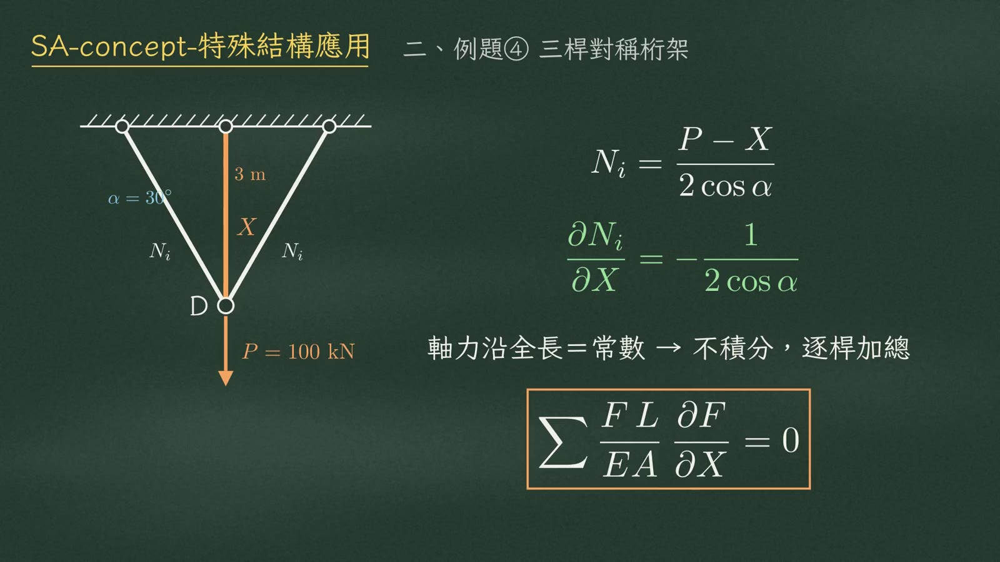
由節點 D 的垂直平衡，兩根斜桿各分到：
$$N_i=\frac{P-X}{2\cos\alpha},\qquad \frac{\partial N_i}{\partial X}=-\frac{1}{2\cos\alpha}$$桁架每根桿的軸力沿全長是常數，所以應變能不用積分，直接逐桿加總：
$$\sum\frac{FL}{EA}\,\frac{\partial F}{\partial X}=0$$表格法
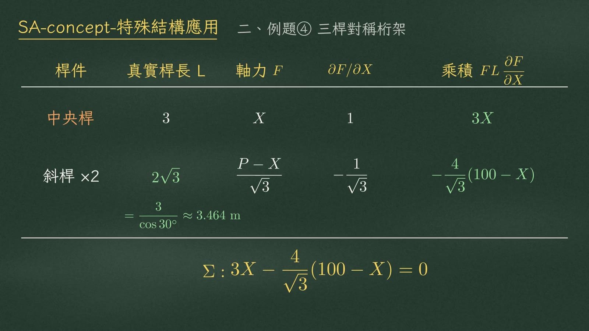
考場上一律用表格列：桿件、真實桿長、軸力、偏微分、乘積。
| 桿件 | 真實桿長 \(L\) | 軸力 \(F\) | \(\partial F/\partial X\) | 乘積 \(FL\,\partial F/\partial X\) |
|---|---|---|---|---|
| 中央桿 | 3 | \(X\) | 1 | \(3X\) |
| 斜桿 ×2 | \(2\sqrt3=\dfrac{3}{\cos30^\circ}\approx3.464\) m | \(\dfrac{P-X}{\sqrt3}\) | \(-\dfrac{1}{\sqrt3}\) | \(-\dfrac{4}{\sqrt3}(100-X)\) |
閉合解
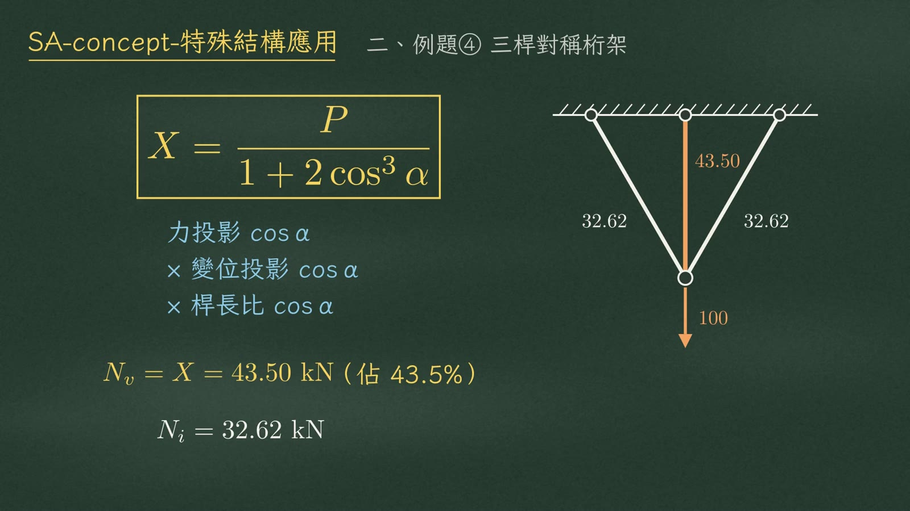
這個 \(\cos^3\) 是三個 cos 乘在一起：力要投影一次，變位要投影一次，桿長比又是一個 cos。代入 30°：
$$N_v=X=43.50\ \text{kN}\ (\text{佔 }43.5\%),\qquad N_i=32.62\ \text{kN}$$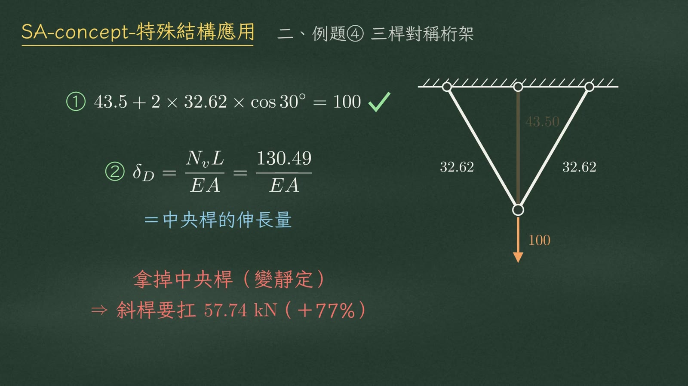
② 節點 D 的下降量＝中央桿的伸長量：\(\delta_D=\dfrac{N_vL}{EA}=\dfrac{130.49}{EA}\)
如果把中央桿拿掉（變靜定），斜桿要扛 57.74 kN，多了 77%——這就是多餘桿件分擔載重的價值。
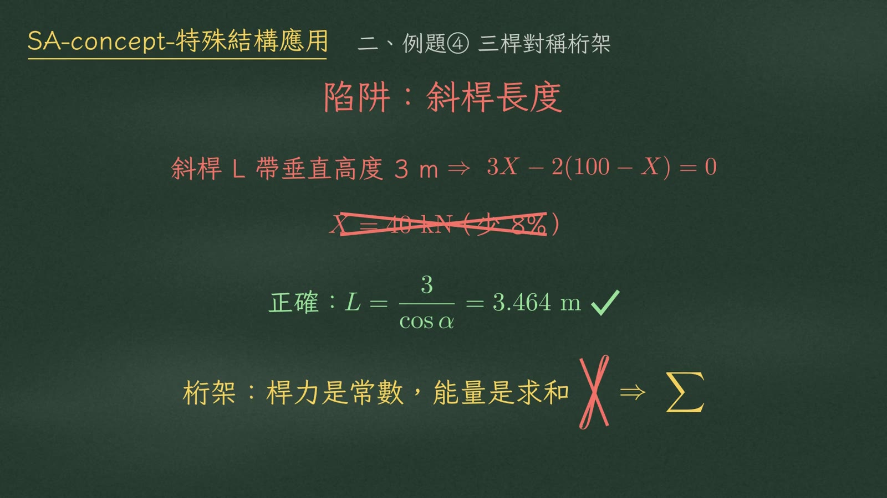
另外，桁架不要寫積分號——桿力是常數，能量是求和 \(\sum\)。
三、例題⑤ 梁＋吊桿混合結構
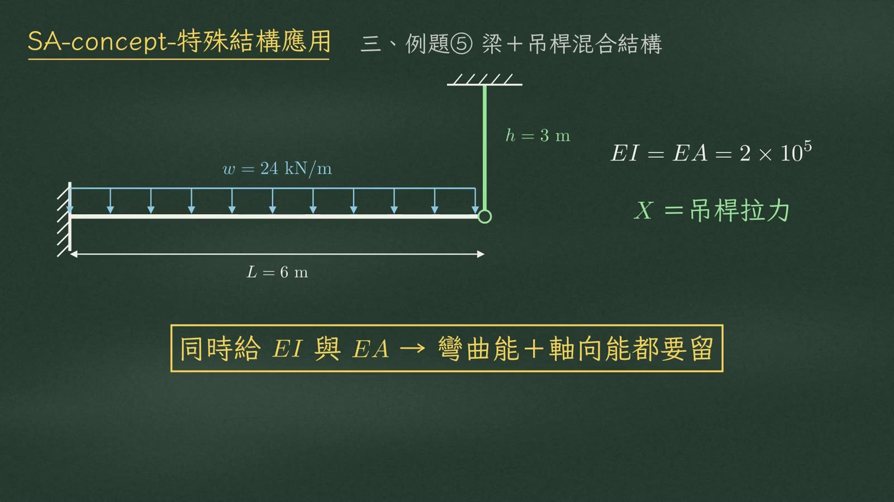
懸臂梁跨長 6 m，受 24 kN/m 的均布載重，自由端被一根高 3 m 的吊桿吊住，\(EI=EA=2\times10^5\)。題目同時給了 \(EI\) 和 \(EA\)，就是明示兩項都要留。選吊桿拉力為多餘力 \(X\)。
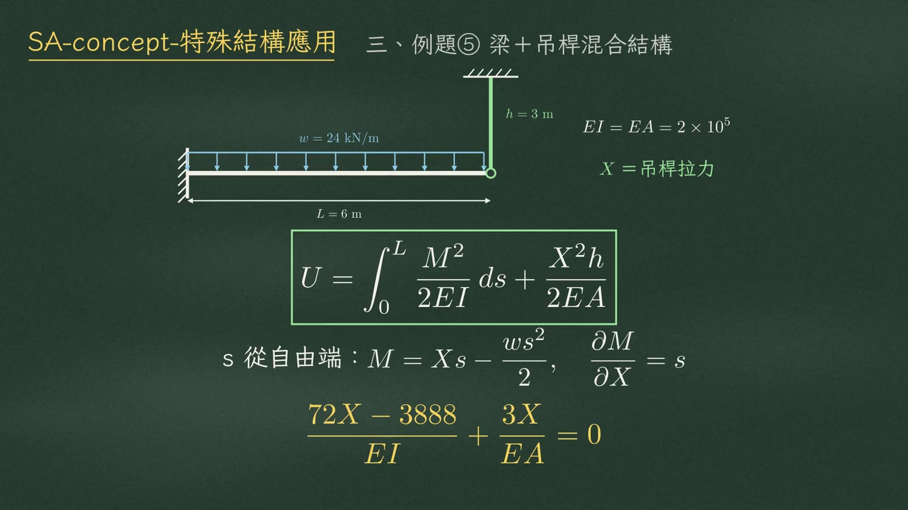
從自由端量 \(s\)：\(M=Xs-\dfrac{ws^2}{2}\)，\(\dfrac{\partial M}{\partial X}=s\)。對 \(X\) 偏微分，梁那一項與吊桿那一項加起來等於零：
$$\frac{72X-3888}{EI}+\frac{3X}{EA}=0$$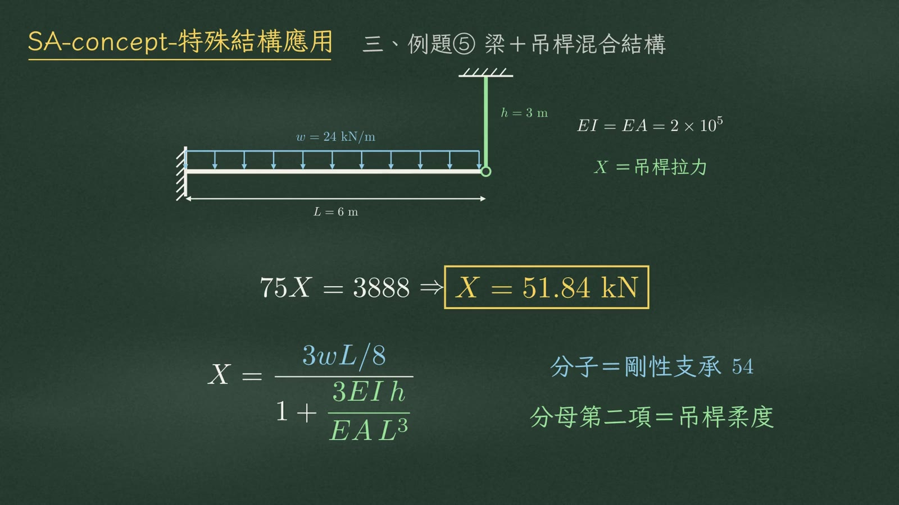
因為 \(EI\) 和 \(EA\) 數值相同：
$$75X=3888\ \Rightarrow\ X=51.84\ \text{kN}$$寫成通式：
$$X=\frac{3wL/8}{1+\dfrac{3EI\,h}{EA\,L^3}}$$分子 \(3wL/8\) 就是剛性支承的 54；分母多出來的那一項，就是吊桿的柔度。
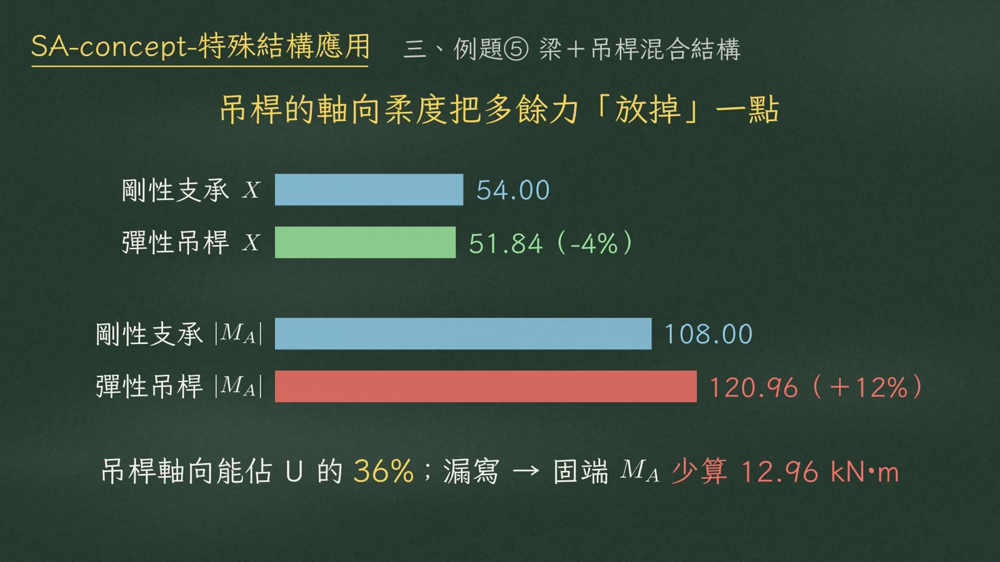
| 項目 | 剛性支承 | 彈性吊桿 | 差異 |
|---|---|---|---|
| 多餘力 \(X\)（kN） | 54.00 | 51.84 | −4% |
| 固端彎矩 \(|M_A|\)（kN·m） | 108.00 | 120.96 | ＋12% |
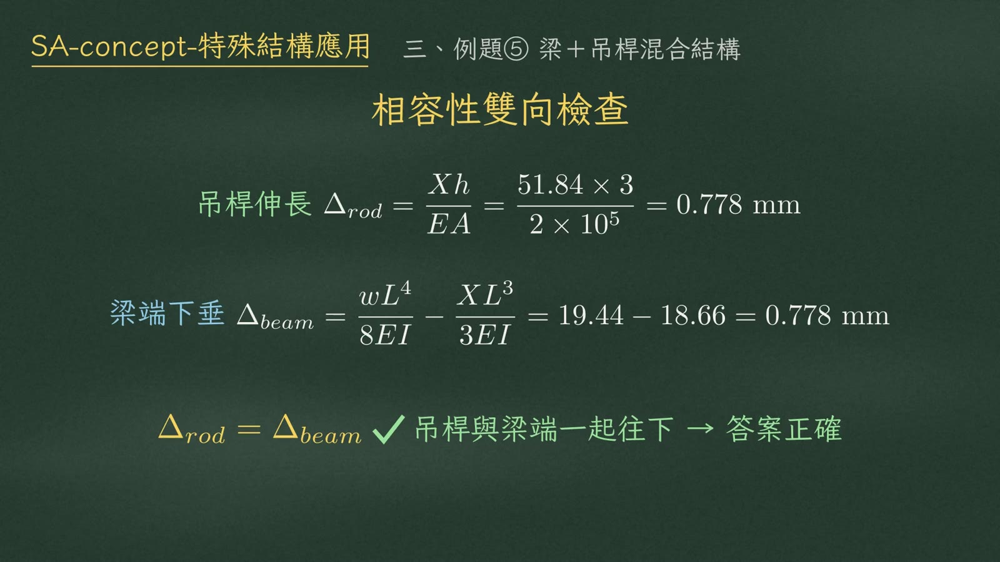
梁端下垂：\(\Delta_{beam}=\dfrac{wL^4}{8EI}-\dfrac{XL^3}{3EI}=19.44-18.66=0.778\) mm
兩者相等 → 吊桿與梁端一起往下，答案正確。
四、例題⑥ 對稱門型剛架
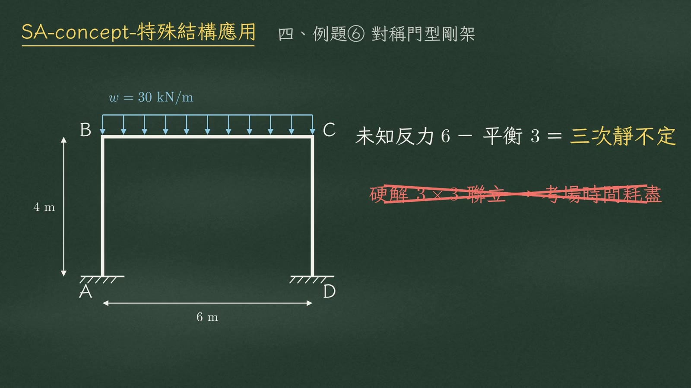
柱高 4 m、梁跨 6 m，頂梁受 30 kN/m 的均布載重，兩個柱底固定。未知反力 6 個，平衡 3 條 → 三次靜不定。硬解要列 3×3 聯立，考場時間很容易耗盡。
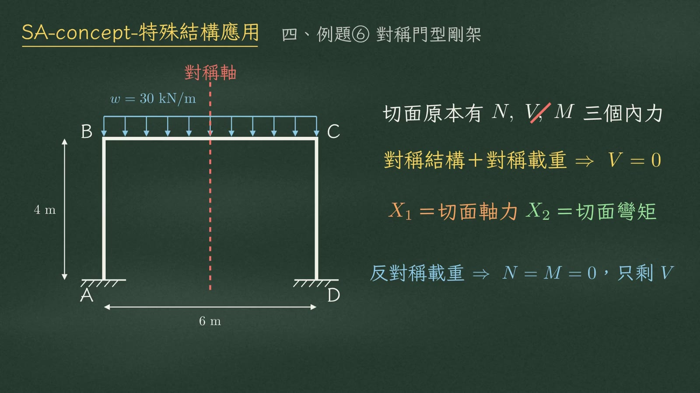
解法是在對稱軸切開。切面原本有軸力、剪力、彎矩三個內力：
| 載重型態 | 切面為零的內力 | 剩下的未知數 |
|---|---|---|
| 對稱結構＋對稱載重 | \(V=0\) | \(X_1\)＝切面軸力、\(X_2\)＝切面彎矩 |
| 反對稱載重 | \(N=M=0\) | 只剩剪力 \(V\) 一個 |
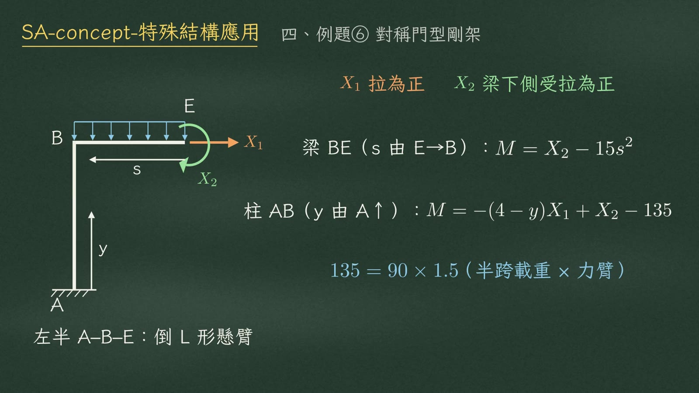
取左半邊 ABE 當基本結構，就是一根倒 L 形的懸臂。\(X_1\) 以拉力為正，\(X_2\) 以梁下側受拉為正。
$$\text{梁 BE（}s\text{ 由 E}\to\text{B）}:\quad M=X_2-15s^2$$ $$\text{柱 AB（}y\text{ 由 A 往上）}:\quad M=-(4-y)X_1+X_2-135$$這個 135，是半跨載重 90 kN 乘上力臂 1.5 m：\(135=90\times1.5\)。
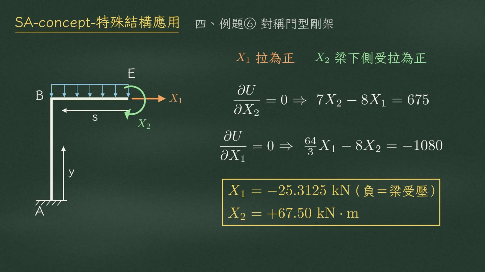
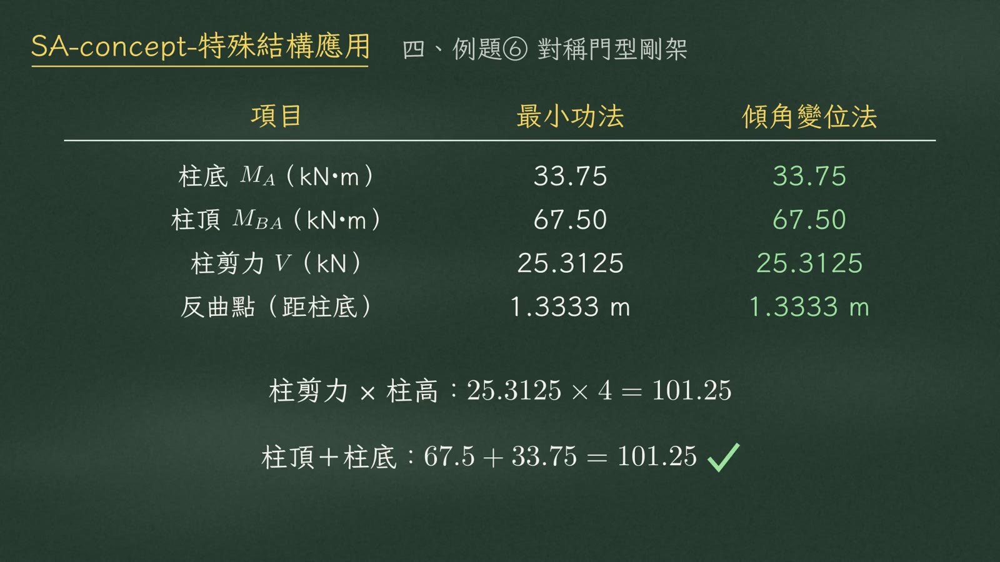
| 項目 | 最小功法 | 傾角變位法 |
|---|---|---|
| 柱底 \(M_A\)（kN·m） | 33.75 | 33.75 |
| 柱頂 \(M_{BA}\)（kN·m） | 67.50 | 67.50 |
| 柱剪力 \(V\)（kN） | 25.3125 | 25.3125 |
| 反曲點（距柱底） | 1.3333 m（4/3 m） | 1.3333 m |
柱頂＋柱底彎矩：\(67.5+33.75=101.25\) ✓ 吻合
考場 SOP
- 盤點 U：給 \(EI\) 留彎曲項、給 \(EA\) 留軸向項、兩個都給就兩項都留。
- 桁架列表格；剛架先看對稱 → 切半結構（\(V=0\)）。
- 令 \(\partial U/\partial X=0\)，解多餘力。
- 獨立驗算：桁架查斜桿真實長度｜混合結構比對伸長量和下垂量｜剛架查柱剪力×柱高＝兩端彎矩和。
考場避坑
② 混合結構漏掉軸向項 → 固端彎矩 \(|M_A|\) 從 120.96 掉成 108（低估）。
③ 對稱門型剛架硬解三次靜不定 → 看到對稱，先在對稱軸切開，令切面剪力 \(V=0\)，降成 2×2。
總結
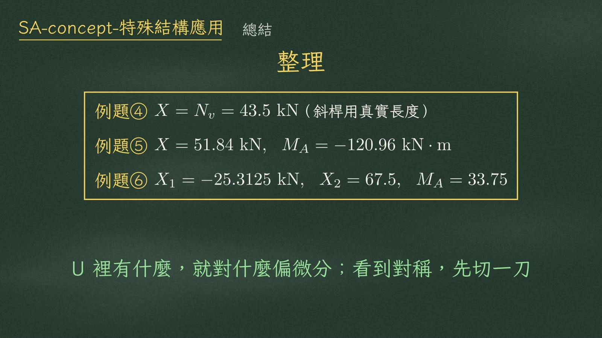
| 例題 | 答案 |
|---|---|
| ④ 三桿對稱桁架 | 中央桿 \(X=N_v=43.5\) kN（斜桿用真實長度） |
| ⑤ 梁＋吊桿 | 吊桿拉力 \(X=51.84\) kN，固定端彎矩 \(M_A=-120.96\ \text{kN}\cdot\text{m}\) |
| ⑥ 對稱門型剛架 | 切面軸力 \(X_1=-25.3125\) kN、切面彎矩 \(X_2=67.5\ \text{kN}\cdot\text{m}\)、柱底 \(M_A=33.75\ \text{kN}\cdot\text{m}\) |
來源：video/SA-concept-特殊結構應用.mp4（旁白 segments.py、字幕 SA-concept-特殊結構應用.srt、時間軸 timeline.json）。黑板圖取自各段結束前 0.5 秒畫面；例題數值已依 HANDOFF.md 複算一致。